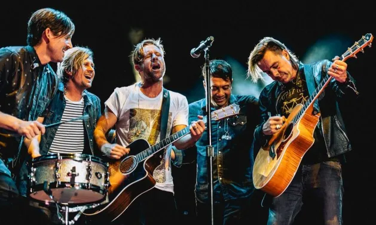
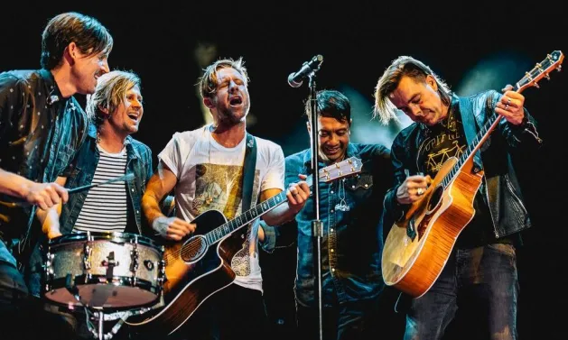
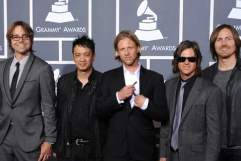
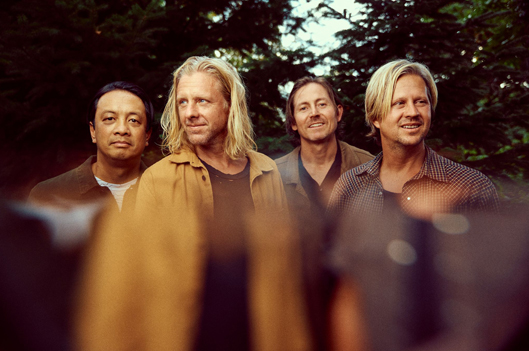
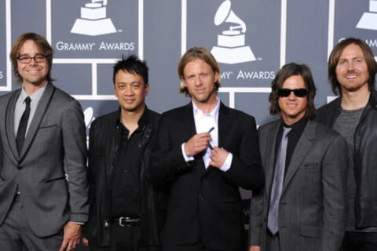
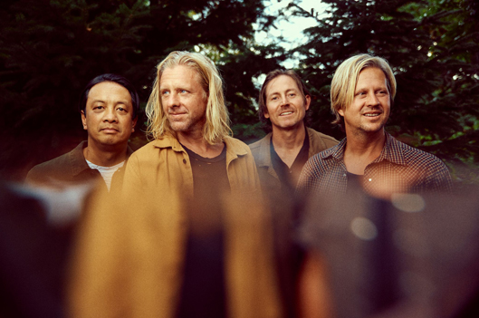

.MUSIC.
The Most Meaningful Song to Complete the Race
Meant to live
Listen NowSwitchfoot
 

 



One of my favorite songs in high school was "Meant to Live" by the band Switchfoot. Music played a vital role in my life during this time, especially while I was involved in sports. I participated in track and field, competing in the 400 and 800 meter races, as well as the 3-mile run and cross country. I loved listening to this song during warm-ups at practice and sometimes right before a track meet to stay motivated and inspired. While I was never the fastest, I always finished the race. I never gave up. I always crossed the finish line.